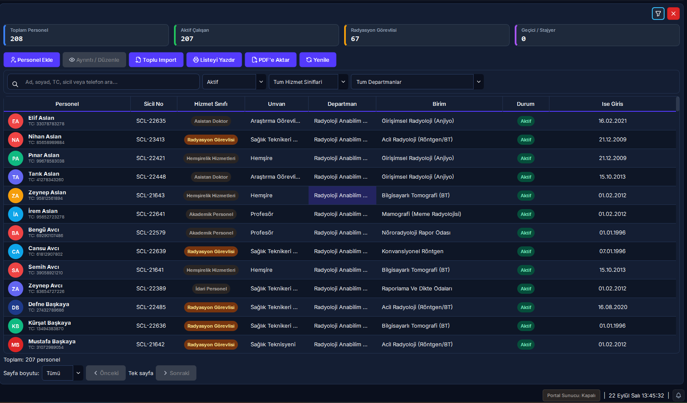
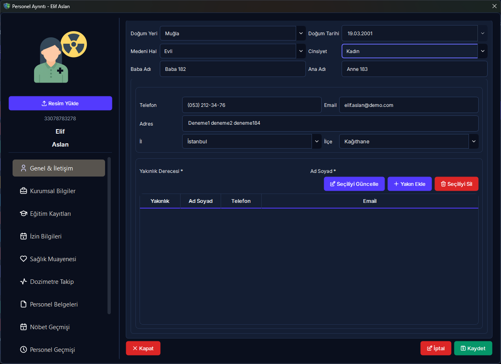

Personel Yönetimi, Lisans Kotası & Toplu İçe Aktarım
Radyasyonla çalışan personelin özlük, lisans, unvan, görev yeri, radyasyon çalışma grubu (A/B), lisans kotası, sağlık muayeneleri, zimmetli koruyucu ekipman (RKE), gebe/emzirme kalkanı ve 30 yıllık yasal KVKK arşiv yönetim rehberi.
Hızlı Reçete: Personel Yaşam Döngüsü ve Yasal Uyum
Personel ekleme, lisans kotası denetimi, gebe koruması ve ayrılışta 30 yıllık KVKK arşivleme süreci
Radyasyon çalışanlarını kurum lisans kotası dahilinde kaydetmek, sağlık ve dozimetrik geçmişlerini kesintisiz yönetmek.
[Yeni Personel Ekle] ile kayıt açın, gebe/emzirme durumunu bildirin, ayrılışta zimmetleri kapatıp `kvkk_arsiv_{tc}.zip` paketini oluşturun.
Kota aşımı engellenir; gebe personelin nöbeti sıfırlanıp dozu 1 mSv'e kilitlenir; ayrılan personelin yasal kayıtları 30 yıl saklanmak üzere şifrelenir.
📌 5N1K Kural ve Fonksiyon Tablosu
Personel yönetimi, lisans denetimi, arama filtreleri ve toplu aktarım araçlarının işleyişi.
| NE? (Ekran Kontrolü) | NEDEN? (Kullanım Amacı) | NASIL? (Çalışma Mantığı) | NE ZAMAN? (Hangi Durumda) | KİM? (Yetkili Kitle) |
|---|---|---|---|---|
|
Metin Arama (txtSearch) Üst Filtre Çubuğu |
Yüzlerce çalışan arasından hedeflenen personele anında ulaşmak. | Ad, Soyad, TC Kimlik No, Sicil No ve E-posta alanlarında harf girildikçe textChanged sinyaliyle dinamik filtreleme yapar. |
Personel sorgulama ve işlem öncesinde. | Tüm Kullanıcılar |
|
Durum Filtresi (cmbDurumFilter) Üst Filtre Çubuğu |
Aktif çalışanlar ile işten ayrılmış eski personeli ayırmak. | "Tümü", "Aktif Çalışanlar" ve "Ayrılmış / Pasif" seçeneklerine göre SQL sorgusunu filtreler. | Rutin işlemlerde aktifleri, denetimlerde eski personelleri incelerken. | Tüm Kullanıcılar |
|
Yeni Personel Ekle Üst Sol Buton |
Kuruma yeni başlayan personeli yasal kotalar dahilinde sisteme dahil etmek. | Lisans kotası denetlenir; MERNIS algoritmasıyla TC kontrol edilir; rol izinlerine göre onay kuyruğuna yönlendirilir. | İşe yeni personel alımlarında. | Admin / İK / RGS |
|
Personel Detay Kartı Satır Çift Tık / Düzenle |
Personelin tüm özlük, sağlık, zimmet ve doz geçmişini tek ekranda incelemek. | Sekmeli diyalog penceresi açılır: Özlük Bilgileri, İletişim, Sağlık & Muayeneler, Zimmetli RKE ve Dozimetreler listelenir. | Bilgi güncelleme, zimmet takibi ve sağlık kontrolünde. | Yetkili Kullanıcılar |
|
Kullanıcı Hesabı Oluşturma Yeni Personel Formu |
Personelin masaüstü veya web portalına giriş yapabilmesini sağlamak. | Kutucuk seçildiğinde kullanıcı adı ve rolü belirlenir; user_service ile personelle eşleşen giriş hesabı açılır. |
Personel sisteme kendi oturumuyla girecekse. | Sistem Yöneticisi |
|
Gebe / Emzirme Kalkanı Sağlık & Koruma Sekmesi |
Mevzuat gereği anne ve bebeği radyasyon riskinden tam korumaya almak. | Etkin doz eşiği 1 mSv'e kilitlenir; gece nöbetleri sıfırlanır, fazla mesai engellenir; doğumdan sonra 1 yıl emzirme muafiyeti sürer. | Gebelik bildirimi veya doğum sonrası emzirme döneminde. | RGS / Hekim / Admin |
|
İlişik Kes / Arşivle Personel İşlem Menüsü |
Ayrılan personelin zimmetlerini kapatıp lisans kotasını serbest bırakmak. | Zimmetli RKE ve aktif dozimetreler denetlenir; ilişik kesilir; kvkk_arsiv_{tc}.zip paketi oluşturulup personel pasife alınır. |
İşten ayrılma, tayin veya emeklilik durumunda. | Admin / RGS |
|
Excel'e Aktar (Dışa Aktarım) Tablo Araçları |
Personel listesini denetim, raporlama veya yedek amacıyla bilgisayara almak. | Tablodaki filtrelenmiş verileri sütun stilleri ve başlıklarıyla birlikte .xlsx formatında kaydeder. |
Resmi raporlama ve yönetim sunumlarında. | Tüm Kullanıcılar |
|
Toplu İçe Aktar (Excel/CSV) Toplu İşlemler Menüsü |
Onlarca veya yüzlerce personeli tek tek girmek yerine Excel'den tek tıkla yüklemek. | Excel şablonundaki satırları doğrular (TC kontrolü, kota kontrolü); geçerlileri ekler, hataları ayrı liste olarak raporlar. | İlk kurulum aşamasında veya toplu personel alımlarında. | Sistem Yöneticisi |
|
Pencereyi Kapat (btnScreenClose) Sağ Alt Buton |
Personel listesi modülünden çıkıp ana ekrana dönmek. | Global kapatma slotu tetiklenir; açık formlar temizlenerek alt pencere kapatılır. | İşlem tamamlandığında. | Tüm Kullanıcılar |
Saha Mit Avcısı: "İşten Ayrılan Personeli Silersek Doz ve Sağlık Kayıtları Yok Olur mu?"
En Sık Karşılaşılan Yasal YanılgıYanlış İnanış: "İşten çıkan personeli silersek veritabanından tamamen uçar, geçmiş doz kayıtları ve sağlık raporları kaybolur; lisans kotasından düşsün diye kaydı silmemiz şarttır."
Doğru Gerçek: KESİNLİKLE HAYIR. NDK Radyasyon Güvenliği Yönetmeliği, 6331 sayılı İSG Kanunu ve EURATOM direktifleri uyarınca radyasyon çalışanlarının tüm periyodik sağlık raporları ve dozimetrik geçmişi 30 yıl boyunca saklanmak zorundadır. RADPYS'de ayrılan personel veritabanından kalıcı olarak silinmez; durumu "Ayrıldı / Arşivlendi" statüsüne alınarak lisans kotasından düşürülür. Ayrılış anında personelin tüm 30 yıllık geçmişini içeren şifreli `kvkk_arsiv_{tc}.zip` yasal paketi oluşturularak arşiv kasasında güvence altına alınır.
🔄 Personel Yaşam Döngüsü ve Mevzuat Akış Şeması
Personel kaydı, lisans kotası denetimi, gebe koruma kalkanı ve ilişik kesme adımları.
graph TD
A(["Yeni Personel Kaydı Başlatılır"]) --> B{"Kuruluş Lisans Kotası Uygun mu?"}
%% Kota ve Kayıt Akışı
B -->|"Kota Dolu"| C["Kota Aşımı Uyarısı: İşlem Engellenir"]
B -->|"Kota Uygun"| D["MERNIS Algoritması ile TC Doğrulanır"]
D --> E{"Kullanıcı Rolü Onay Gerektiriyor mu?"}
E -->|Evet| F["RGS Onay Kuyruğuna Yönlendirilir"]
E -->|Hayır| G["Veritabanına Aktif Olarak Eklenir"]
F -->|Onaylandı| G
G --> H{"Sistem Giriş Hesabı Açılsın mı?"}
H -->|Evet| I["Otomatik Kullanıcı Hesabı & Şifre Eşlenir"]
H -->|Hayır| J["Yalnızca Özlük & Doz Takibi Yapılır"]
%% Gebe Koruma Akışı
G --> K{"Gebelik / Emzirme Bildirildi mi?"}
K -->|Evet| L["Gebe Koruma Kalkanı Devreye Girer"]
L --> M["Yıllık Doz Eşiği 1 mSv Olarak Kilitlenir"]
M --> N["Gece Nöbeti ve Fazla Mesai Sıfırlanır"]
N --> O["Doğum Sonrası 1 Yıl Emzirme Muafiyeti Uygulanır"]
%% Ayrılış ve Arşivleme Akışı
G --> P(["İlişik Kesme / Arşivleme İsteği"])
P --> Q{"Zimmetli RKE / Dozimetre Var mı?"}
Q -->|Var| R["İade Formu Oluşturulur & Teslim Alınır"]
Q -->|"Yok / İade Edildi"| S["Personel Statüsü: Ayrıldı Olarak Güncellenir"]
R --> S
S --> T["Lisans Kotası Otomatik Serbest Bırakılır"]
T --> U["30 Yıllık kvkk_arsiv_tc.zip Paketi Üretilir"]
U --> V(["Yasal Arşiv Kasasına Aktarıldı"])
style A fill:#06b6d4,stroke:#0891b2,stroke-width:2px,color:#fff
style B fill:#f8fafc,stroke:#94a3b8,stroke-width:1.5px,color:#0f172a
style C fill:#ef4444,stroke:#dc2626,stroke-width:2px,color:#fff
style G fill:#10b981,stroke:#059669,stroke-width:2px,color:#fff
style L fill:#8b5cf6,stroke:#7c3aed,stroke-width:2px,color:#fff
style V fill:#0891b2,stroke:#0e7490,stroke-width:2px,color:#fff
🖼️ Arayüz Ekran Görünümleri
Personel Listesi, dinamik arama paneli ve detaylı personel kartı görünümleri.


📋 Adım Adım İşlem Rehberi
Saha operasyonlarında en sık kullanılan 5 ana işlemin uygulama adımları.
Yeni Personel Kaydı Açma ve Lisans Kotası Doğrulama
- Personel Listesi ekranının sol üst köşesindeki [Yeni Personel Ekle] butonuna tıklayın.
- Sistem arka planda kurum lisansının aktif personel kotasını sorgular. Kota dolu ise ekranda bilgilendirme modalı açılır.
- Formdaki zorunlu alanları doldurun:
- TC Kimlik No: 11 haneli geçerli MERNIS algoritmasına uygun numara.
- Ad, Soyad ve Sicil No.
- Birim ve Görev / Unvan: Radyoloji, Nükleer Tıp veya Radyasyon Onkolojisi seçimi.
- Radyasyon Çalışma Grubu: Grup A (Aylık Dozimetre) veya Grup B (3 Aylık Dozimetre).
- Personelin programa kendi şifresiyle girmesi gerekiyorsa [Sistem Kullanıcı Hesabı Oluştur] kutusunu işaretleyip rolünü seçin.
- [Kaydet] butonuna basarak işlemi tamamlayın. Onay gerektiren bir roldeyseniz kayıt RGS onay kuyruğuna iletilecektir.
Personel Detaylarını Güncelleme ve Doz / Sağlık Takibi
- Tabloda aradığınız personelin satırına çift tıklayın veya satır sonundaki [Düzenle] butonuna basın.
- Açılan Personel Detay Kartı penceresinde ilgili sekmeye geçin:
- Özlük Bilgileri: İletişim, adres, kan grubu, acil durum irtibatı.
- Radyasyon Bilgileri: Grup A/B tercihi, TENMAK/NDK servis sağlayıcı kodu.
- Zimmetler: Üzerine kayıtlı kurşun önlük, tiroid koruyucu ve aktif dozimetreler.
- Sağlık Muayeneleri: İşe giriş ve periyodik hemogram/dermatoloji kontrol tarihleri.
- Güncellemeleri tamamladıktan sonra [Değişiklikleri Kaydet] butonuna basarak formu kapatın.
Gebe ve Emziren Personel Koruma Protokolünün Devreye Alınması
- İlgili kadın personelin detay kartını açarak [Sağlık & Koruma] sekmesine gelin.
- [Gebelik Durumu Bildirimi] kutusunu işaretleyin; hekim raporundaki gebelik başlangıç tarihini ve tahmini doğum tarihini girin.
- [Kaydet] butonuna bastığınız anda RADPYS güvenlik motoru:
- Personelin yıllık etkin doz eşiğini mevzuat uyarınca 1 mSv değerine sabitler.
- Nöbet planlama modülünde personelin gece vardiyası ve fazla mesai almasını otomatik olarak engeller.
- Radyasyon Güvenlik Sorumlusu (RGS) paneline anlık uyarı bildirimi gönderir.
- Doğum gerçekleştiğinde aynı sekmeden [Emzirme Durumu] seçilerek koruma süreci 1 yıl daha uzatılabilir.
İşten Ayrılış, Zimmet İadesi ve 30 Yıllık KVKK Arşiv Paketi
- İşten ayrılan personelin satır işlem menüsünden [İlişik Kes / Arşivle] butonuna basın.
- Sistem personelin zimmet dökümünü kontrol eder:
- Üzerinde zimmetli kurşun önlük, koruyucu gözlük vb. varsa sistem "İade Edilmemiş RKE Bulunmaktadır" uyarısı verir.
- Aktif periyot dozimetresi teslim edilmemişse uyarı çıkar.
- Zimmetler depoya iade edildikten sonra ayrılış tarihini ve nedenini girerek onay verin.
- Sistem personeli "Ayrıldı" statüsüne alıp lisans kotasını serbest bırakır.
- Otomatik olarak NDK mevzuatı gereği 30 yıl saklanacak olan `kvkk_arsiv_{tc}.zip` kriptolu arşiv dosyasını bilgisayarınıza indirmeniz için dosya kaydetme penceresi sunar.
Excel ile Toplu Personel Aktarımı (Toplu Yükleme Sihirbazı)
- Üst menüdeki [Toplu İşlemler] açılır menüsünden [Örnek Excel Şablonu İndir] seçeneğine tıklayın.
- İndirilen şablonda sütun başlıklarını değiştirmeden personellerin TC, Ad, Soyad, Sicil No, Birim ve Görev bilgilerini girin.
- Menüden [Toplu İçe Aktar (Excel)] butonuna basın ve hazırladığınız dosyayı seçin.
- Sistem yükleme sihirbazında ön izleme tablosu açar:
- Yeşil satırlar geçerli ve lisans kotasına sığan personelleri gösterir.
- Kırmızı satırlar geçersiz TC veya eksik zorunlu alan içeren satırları hata detayıyla listeler.
- [Onayla ve Aktar] butonuna tıkladığınızda geçerli kayıtlar veritabanına işlenir; hatalı satırlar için hata raporu Excel'i indirilir.
❓ Sıkça Sorulan Sorular (SSS)
Personel yönetimi, lisans kotaları, gebelik muafiyeti ve arşivleme hakkında merak edilenler.